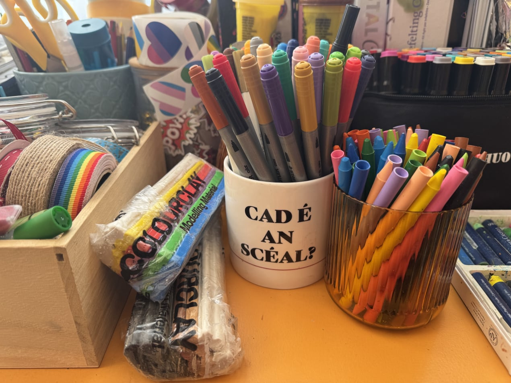
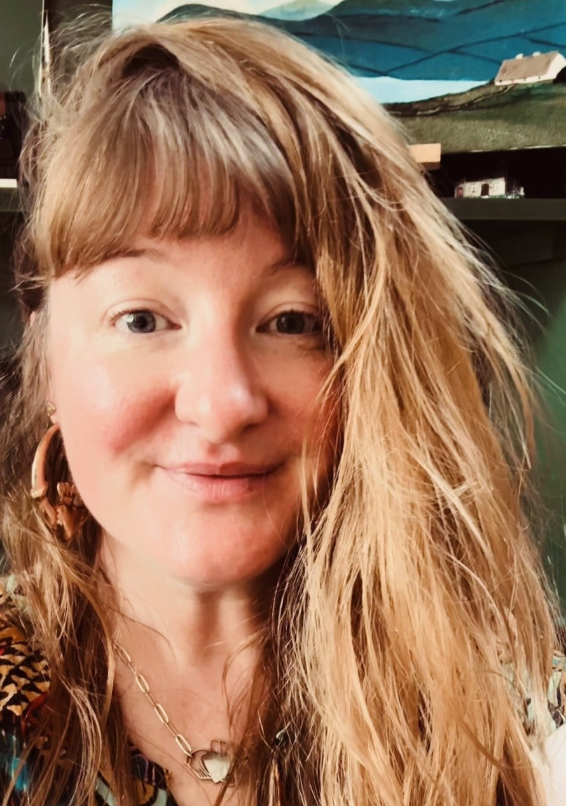
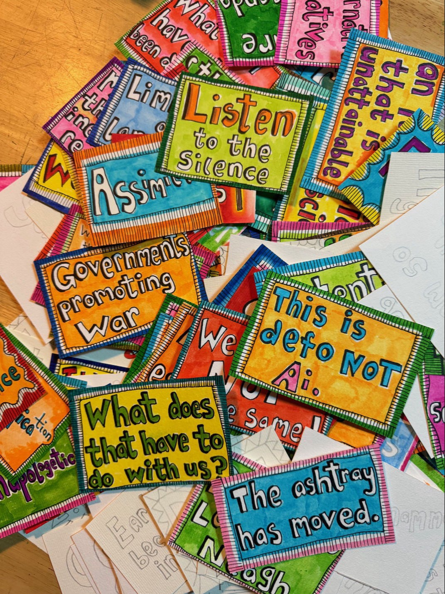
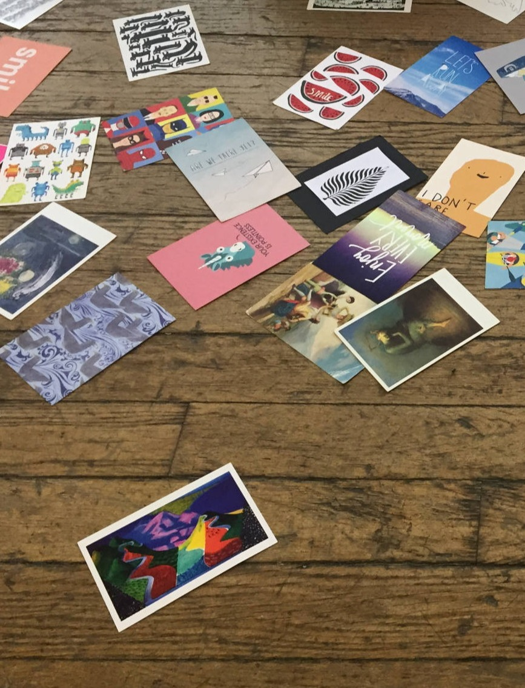
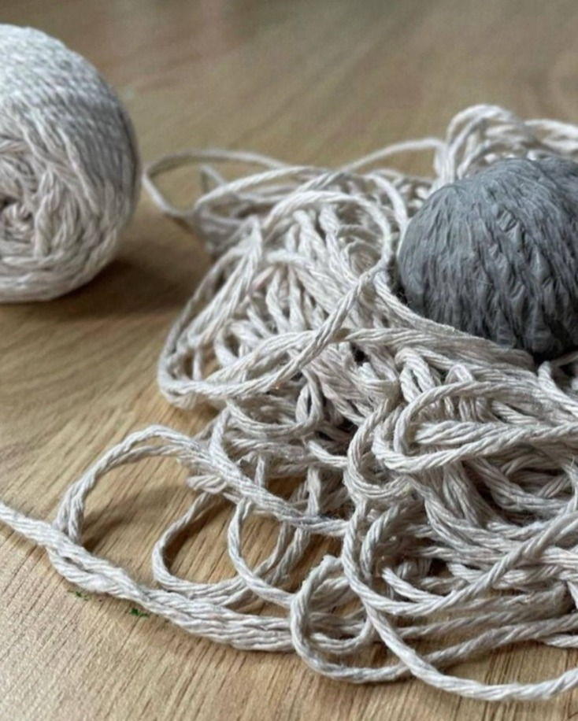
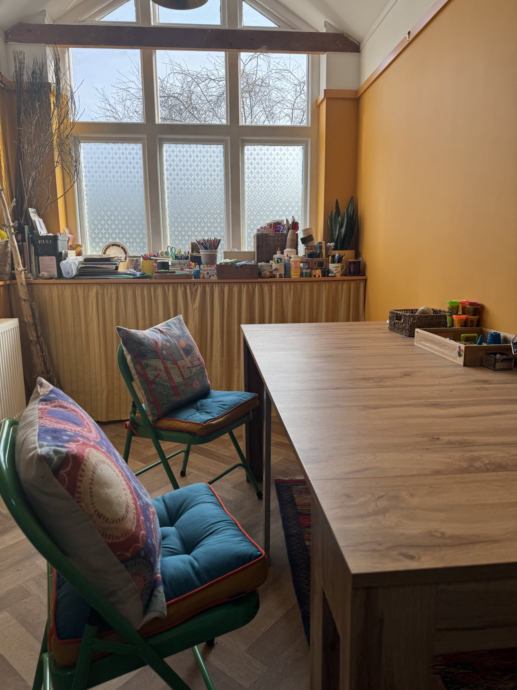
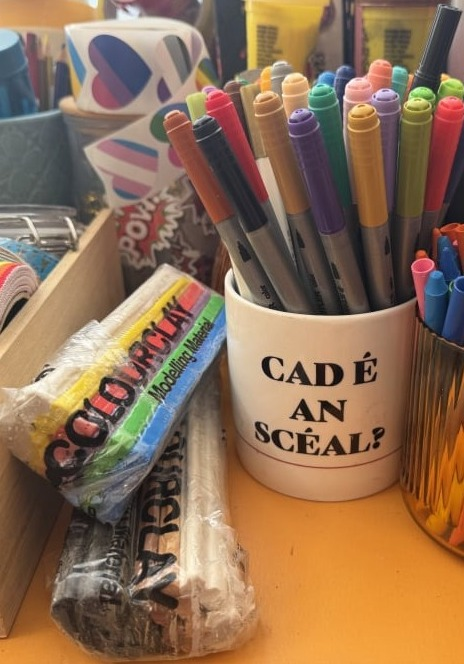

Art Psychotherapy and Supervision
Newark, East Midlands (UK) & Online


My name is Aisling pronounced Ash-ling.
I'm an Irish artist and art psychotherapist living in Britain. I work with children and adults of all ages. From my art studio in Newark, I offer art psychotherapy, in person or online. I also provide supervision for art therapists, socially engaged practitioners, and community organisations.
My work is primarily with neurodivergent and queer clients, and those navigating institutional abuse, statutory failures, and transgenerational trauma — as well as climate anxiety, depression, low self-esteem, and disordered eating. My practice is grounded in psychodynamic and group analytic thinking, shaped by the ethos of therapeutic community.
I also bring experience from community incident response, disaster recovery, and the television and film industry.
Within this broader range of practice, I hold a particular specialism in working with Irish people in Britain — first, second and third generation — and the specific ways historic institutional harms and inherited family history surface across generations.

Art psychotherapy (also known as art therapy) combines psychotherapy with art-making — drawing, painting, or sculpting — to help people express and explore complex thoughts, emotions and trauma.
You don't need to be artistic. The focus isn't on technical skill, but on the creative process itself. Uncover what emerges and what you discover as you create. Through art, you can work through difficult emotions and deepen your self-awareness.
Because art psychotherapy doesn't depend on spoken language, it's suitable for all ages, and can be particularly useful for people who have experienced trauma. Any artwork made in sessions is confidential.
In art therapy, an art psychotherapist guides and supports you through this process, creating a safe space for exploration and growth. Art psychotherapists are registered with the HCPC (Health and Care Professions Council) — the statutory regulator for the profession in the UK. This register ensures safety and best practice by holding registrants to set standards of proficiency, training, and conduct.

Groups form microcosms of society. Dynamics arising in group therapy can echo our personal, social, cultural, and political contexts, offering space to explore who we are and the world around us.
Thinking together with others in a group can help make sense of how the past influences the present. Groups can be a lifeline for people who are isolated, especially those suffering because of social or cultural circumstances. They encourage imagination, connection, and healthy relationships, improve communication skills, reduce feelings of isolation, and can help people find their authentic voice.
I conduct a several weekly groups including a weekly online art therapy group, a supervision group and a weekly online art therapy group for the Irish Community in Britain. Get in touch to register interest or find out more.

Supervision is a supportive space to reflect and think together about your therapy work, ensuring client welfare and supporting your development as an art psychotherapist. It centres your work and the people you work with — thinking too about spaces, group dynamics, and the wider world we find ourselves in. Ethical practice is at its heart.
My approach is conversational, psychodynamic and group analytic. Through sharing experience, we deepen our understanding in meaningful conversation. I encourage creative responses, and we can make art within supervision if you'd like — and I welcome conversations about how the work and training affects you, professionally and personally.
Supervision isn't a tick-box exercise. It's a valuable, nourishing space that supports psychotherapists' work sustainably.
For community organisations, supervision helps ensure your work is trauma-informed — offering reflective space, an additional safeguarding measure, support for learning, and protection against burnout.

To begin, contact me by email communityarttherapist@gmail.com and we can arrange a time to talk. Our first conversation — thirty minutes, free of charge — is a chance to ask questions and think together about whether I might be the right therapist for you.
Please let me know your name and reason for contacting me, and I'll respond as quickly as possible. My working hours are generally 9.30am–3pm, Monday to Friday.
This is not a crisis service. If you are at risk of harm or unable to keep yourself safe, please seek urgent medical care. Go straight to A&E, if you can. Call 999 for an ambulance. Call your local mental health crisis team. Here are some immediate resources that may be helpful.
Finding Ceangal: On Being Irish, Far From Home
by Aisling Fegan, 20th August 2026If you're Irish and living in Britain or elsewhere abroad, chances are your experience doesn't look like the one your parents or grandparents had. There's no longer a single Irish community to walk into — no Kilburn, no Cricklewood, no parish hall on every corner. Irish people today are scattered across Britain: in market towns, on the Welsh coast, in Scottish villages, in cities with no Irish centre at all.
In some ways, that's a sign of how far things have come. Social media and easy travel mean you can feel proudly, fully Irish without living anywhere near an "Irish community." But for a lot of people, that same shift leaves something missing. The isolation isn't always obvious — it's rarely about standing out or facing hostility. It's quieter than that: a sense of not quite belonging in Britain, paired with a version of Ireland that only exists in memory, in occasional visits, or in stories half-told by family.
And often, those family stories carry weight that's never really been unpacked — emigration, addiction, institutional care, the kind of intergenerational history many Irish families hold without ever discussing directly.
Why creativity, not just conversation
Art therapy (or art psychotherapy) uses image-making alongside talking to help people process what's difficult to put into words — and identity, displacement, and inherited family history are exactly the kind of things that resist neat sentences. Delivered by an HCPC-registered art psychotherapist, it holds the same standards of confidentiality and professional care as any other form of psychotherapy.
You don't need to be able to draw. Nobody is expected to produce a finished piece of art. Some people paint or collage; others find their way in through an object, a photograph, a piece of music, or simply talking alongside the making. In a group, the process goes further still — the relationships that form between participants become part of the therapeutic work itself, alongside whatever each person creates. For anyone carrying a sense of Irish identity that feels hard to place, this kind of non-verbal, group-held space can offer something conversation alone often can't: a way in.
Reaching people where they actually are
This is part of why I'm imagining ÉRIU (pronounced "AIR-oo") Art Therapy, an Irish culturally sensitive art psychotherapy practice dedicated to grounding individuals and rebuilding inner connections through creative expression. Rooted in Irish heritage, the practice supports exploration of identity, healing of collective memory, and the forging of deep personal bonds through creativity — for anyone carrying Irish dúchas (heritage), wherever baile (home) might be.
Agus developing ideas around Ceangal (connection) — online art psychotherapy for Irish adults living internationally regardless of how close they are to an Irish community, or how connected they currently feel to one. Ireland's new Diaspora Strategy, launched at the Global Irish Civic Forum, points to exactly this gap — recognising that digital infrastructure, not just physical community spaces, is now essential to reaching a diaspora that no longer lives in one place. Ceangal is one small, bringing together young people who might otherwise never cross paths. Going online isn't a compromise — it's the point. It means someone in a small town with no Irish centre nearby has exactly the same access as someone in a city with a long-established Irish population. It removes travel time and cost as a barrier. And for some, it offers a kind of privacy that matters — a space to explore an Irish identity or family history that isn't something they talk about openly day to day.
A space to hold it all
Isolation, identity, family history that's gone unspoken — none of these are simple, and none of them need to be resolved in a single conversation. What Irish culturally sensitive art psychotherapy offers is somewhere to bring all of it, at whatever pace feels right, with or without words, alongside people who understand the particular experience of being Irish abroad without needing it explained.
If that sounds like something you, or someone you know, might benefit from, I'd love to hear from you. Ceangal is currently in development as a new initiative from Aisling Fegan, Community Art Therapist. Get in touch to register interest or find out more.

ÉRIU (pronounced "AIR-oo") Art Therapy is an Irish culturally sensitive art psychotherapy practice dedicated to grounding individuals and rebuilding inner connections through creative expression. Rooted in Irish heritage, the practice supports exploration of identity, healing of collective memory, and the forging of deep personal bonds through creativity — for anyone carrying Irish dúchas, wherever baile might be.
In Irish mythology, Ériu is the old Irish name from which Éire—Ireland—takes its name. She was a matron goddess of the land, associated with nurture, sovereignty, and belonging. ÉRIU Art Therapy embodies this exact spirit of welcome. ÉRIU offers a safe, therapeutic sanctuary for people seeking their Irish dúchas — heritage, native place, and an inherited sense of belonging — no matter where in the world they've settled. This Irish culturally sensitive art psychotherapy, draws directly on Aisling Fegan's paper, Uprooting and Rewilding: Irish Culturally Sensitive Psychotherapy, published by the Group Analytic Society International.
ÉRIU Irish culturally sensitive, art psychotherapy is available for adults living internationally. Get in touch to register interest or find out more.

Democracy involves authentic, collective dialogue. As art psychotherapists, we know dialogue isn't just words — it includes silences, behaviour, and creativity too.
Art therapy large groups offers an accessible way for individuals and communities to find their authentic voice, express and and magnify what needs to be said. This is what authentic and truly democratic dialogue looks like. In community, art therapy large groups can help to bridge polarisation in a safe way, elevate social awareness, deepening insight, and create meaningful social change. Thinking together as a group about our social, cultural and geopolitical circumstances can help us to understand how the past shapes the present. Its effects can be far-reaching, long-lasting, and sustainable.
For more information about creating large art therapy groups within community spaces or organisations get in touch.
Born in 2025 out of group work experiences, this group analytic zine has been drawn by Ash… shh. (Aisling Fegan — Irish artist, art psychotherapist, and inhabitant of Britain.)
This zine is shaped by the voices, silences and stories that emerge when people come together in a group. Not all dialogue is verbal. These drawings are speaking. They are social action and part of ongoing learning through being together in groups. Hardcopies available.

AI Website Creator